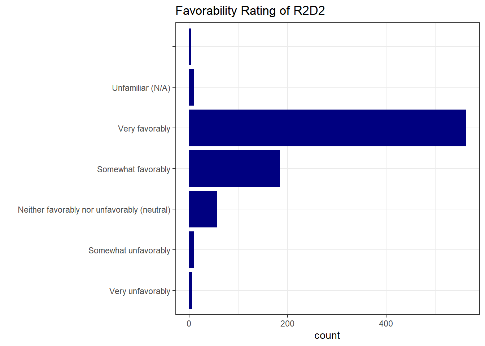
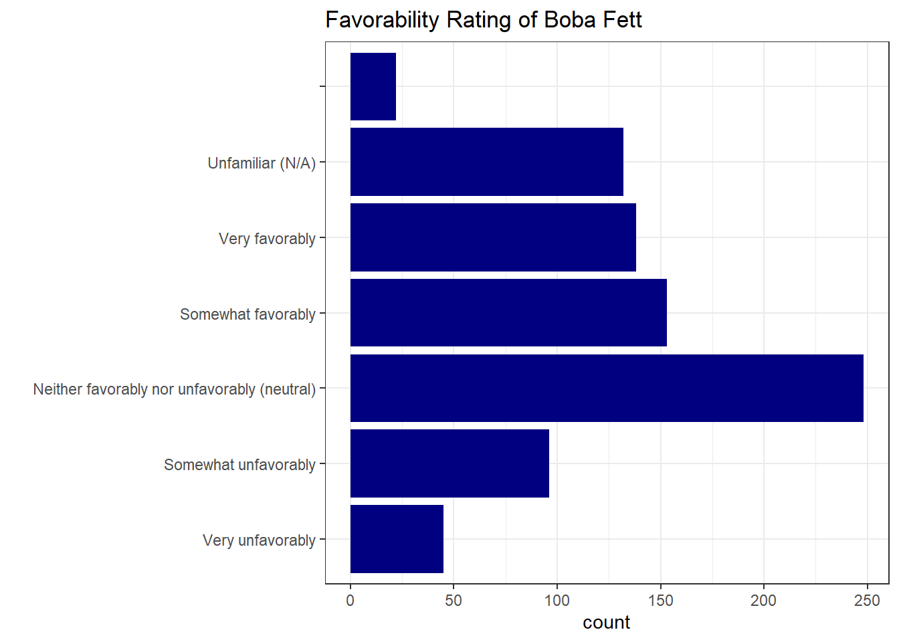
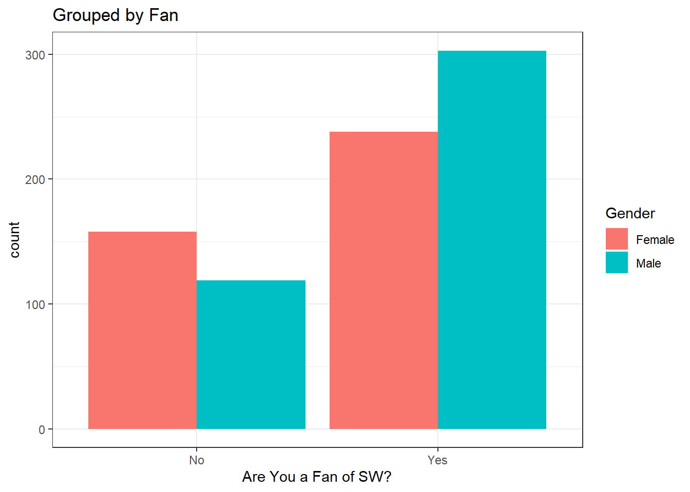

library(tidyverse)
library(mosaic)
library(rio)
library(ggplot2)
sw <- import('https://raw.githubusercontent.com/byuistats/Math221D_Cannon/master/Data/StarWarsData_clean.csv') %>% mutate(Household.Income = factor(Household.Income, levels = c("$0 - $24,999", "$25,000 - $49,999", "$50,000 - $99,999", "$100,000 - $149,999", "$150,000+")))Introducing Categorical Data Analysis
From a Galaxy Far, Far Away
Introduction
In this lesson, we will:
- Introduce a new dataset that we will use throughout the unit on categorical data analysis
- Review summarizing categorical data numerically and visually
- Introduce the foundations of statistical inference for categorical data analysis
Never Tell Me the Odds
A long time ago, in a galaxy far, far away, in a wretched hive of scum an villainy, there was an altercation between bounty hunters Han Solo and Greedo. During said altercation, blasters were drawn and shots fired. Greedo ended up as bantha foddor and Solo walked away without a scratch. The question is, who shot first?1
This controversy has roiled Star Wars fandom for the better part of 2 decades. Your answer to that question may reveal more about you than you might think.
FiveThirtyEight conducted a survey to collect data related to attitudes about Star Wars movies, characters and controversies as well as some demographic data. An article about the survey can be found here.
We will use this data throughout the lessons about categorical data analysis. As always, let’s get to know the data and review summarizing categorical data.
Digging into the Data
Load the Data and Libraries:
Look at the data (glimpse(), View()).
QUESTION: How many respondents are there for the survey?
ANSWER:
Explore Columns
Recall that we can summarize categorical data numerically as counts or percents, and visually as bar charts.
Dig into specific columns:
QUESTION: What proportion of respondents are fans of Star Wars?
ANSWER:
Use the prop.table() function to get a table of proportions.
prop.table(table(sw$`Are You a Fan of SW?`))
No Yes
0.3381295 0.6618705 QUESTION: What is the Favorability breakdown for R2D2?
ANSWER:
ggplot(sw, aes(x=`Favorability_R2 D2`)) +
geom_bar()
Notice that there are some missing values, and the bars are not in a meaningful order. Let’s clean up the data and sort out the order.
Likert Scale Data
Surveys will often ask respondents to select a response to a question on a 5 or 7 point scale. For example, “Strongly Disagree” all the way up to “Strongly Agree”, or in the Star Wars survey, “Very Unfavorable” to “Very Favorable”.
Good visualizations will make sure the bars follow the order that will make it easy for the reader to know if a character is well-liked or despised.
In a previous activity, we introduced the idea of a factor() variable in R. Factors make sure that R knows when a categorical variable is a categorical variable even when it is encoded as a number. Factors are also useful for fixing the order of categorical variables.
Our dataset has many questions about favorability. Let’s first find what the options are. We can use the unique() function to get a list:
unique(sw$`Favorability_Anakin Skywalker`)[1] "Very favorably"
[2] "Somewhat favorably"
[3] "Somewhat unfavorably"
[4] "Neither favorably nor unfavorably (neutral)"
[5] "Very unfavorably"
[6] ""
[7] "Unfamiliar (N/A)" Notice the blank “” which denotes missing values. I can create a list that has these options in the correct order. You have to decide where to put “Unfamiliar (N/A)”. I will put it at the end.
favorability_order <- c("Very unfavorably", "Somewhat unfavorably", "Neither favorably nor unfavorably (neutral)", "Somewhat favorably", "Very favorably", "Unfamiliar (N/A)", "")I can now make a boxplot, specify that my variable is a factor and specify the levels of that factor:
ggplot(sw, aes(y=factor(`Favorability_R2 D2`, levels = favorability_order) )) +
geom_bar(fill="navy") +
theme_bw() +
labs(
y = "",
title = "Favorability Rating of R2D2 "
)
I can reuse favorability_order for any other favorability survey question:
ggplot(sw, aes(y=factor(`Favorability_Boba Fett` , levels = favorability_order) )) +
geom_bar(fill="navy") +
theme_bw() +
labs(
y = "",
title = "Favorability Rating of Boba Fett "
)
Education
What is the Education distribution of respondents?
unique(sw$Education)[1] "High school degree" "Bachelor degree"
[3] "Some college or Associate degree" "Graduate degree"
[5] "" "Less than high school degree" ggplot(sw, aes(y = factor(Education, levels = c("Less than high school degree", "High school degree", "Some college or Associate degree", "Bachelor degree", "Graduate degree", "")) )) +
geom_bar(fill="navy") +
theme_bw() +
labs(
y = "",
title = "Education Breakdown"
)
2 Variables
We can also look at 2 categorical variables simultaneously in a grouped bar chart. How you group the bars will depend on the story you want to tell with the data.
Let’s look at the relationship between Gender and Are You a Fan of SW? grouping in different ways:
# Remove Missing Values
gender_fan <- sw %>%
filter(
Gender != "",
`Are You a Fan of SW?` != ""
)
ggplot(gender_fan, aes(fill = Gender, x=`Are You a Fan of SW?`)) +
geom_bar(position="dodge") +
theme_bw() +
labs(
title = "Grouped by Fan"
)
ggplot(gender_fan, aes(x = Gender, fill=`Are You a Fan of SW?`)) +
geom_bar(position="dodge") +
theme_bw() +
labs(
title = "Grouped by Gender"
)
Our brains will naturally want to make the comparison of the bars that are nearest to each other. If you want the reader to compare Fan status for each gender, then grouping by Gender would be the most appropriate.
Your Turn
Pick a few other variables to summarize from the sw dataset individually.
Pick 2 Variables
Pick 2 categorical variables and look at the bar chart for both. Decide on the most important comparison and make sure your graph groups by that variable.
Inference for Categorical Data
When working through statistical inference for means, we progressed from learning 1-sample t-tests to 2-sample t-tests. When we wanted to compare a quantitative variable between multiple groups, we introduced ANOVA. We will follow a similar path for making inference about population proportions.
In the next few lessons we will
- Hypothesis Tests and Confidence Intervals for 1 Proportion (z-score)
- Hypothesis Tests and confidence Intervals for 2 proportions (z-score)
- Testing Independence between 2 Categorical Variables (Chi-Square)
The Distribution of Sample Statistics
Categorical data is often summarized as a percent. If we randomly select 500 students and find 276 have brown hair, we can estimate the population proportion using \(\hat{p} = \frac{X}{N}\) where \(X\) is the number with brown hair and N is the number in our sample. If another researcher repeated the same experiment, collecting a different sample of 500 from the same population, he or she would get a different number of people with brown hair.
Just like sample means (\(\bar{x}\)), a sample proportion, \(\hat{p}\), has a distribution. The mean of the sampling distribution of a sample proportion is the population proportion, \(p\).
Approximately Normal
As you probably guessed, the distribution of \(\hat{p}\) is approximately normal with:
\[\mu_{\hat{p}} = p\] \[\sigma_{\hat{p}} = \sqrt{\frac{p(1-p)}{N}}\]
Just as it was with a sample mean, we have to check certain conditions to assume the distribution is approximately normal.
For \(\bar{x}\), we needed 1. The population to be normally distributed 2. The sample size greater than 30.
The principle of having a large enough sample for a proportion applies, but we define “large enough sample size” a little differently.
We can assume the distribution of \(\hat{p}\) is approximately normal if:
\[np \geq 10\] \[n(1-p) \geq 10\]
In plain English, this means our sample size has to be big enough to have at least 10 “successes” and 10 “failures”. For example, if we’re estimating the proportion of left handed people, we would need a sample size large enough to have at least 10 left handed people and 10 right handed people.
If the distribution of sample means is approximately normal according to the conditions above, we can calculate a z-score as we did in Unit 1 and 2:
\[z = \frac{\hat{p}-p}{\sqrt{\frac{p(1-p)}{N}}}\]
In the next chapter, we will discuss how to use the prop.test() function, much like the t.test() function to create confidence intervals and perform hypothesis tests based on the assumption that \(\hat{p}\) is normally distributed.
Footnotes
For the definitive answer to the question, see Who Shot First↩︎